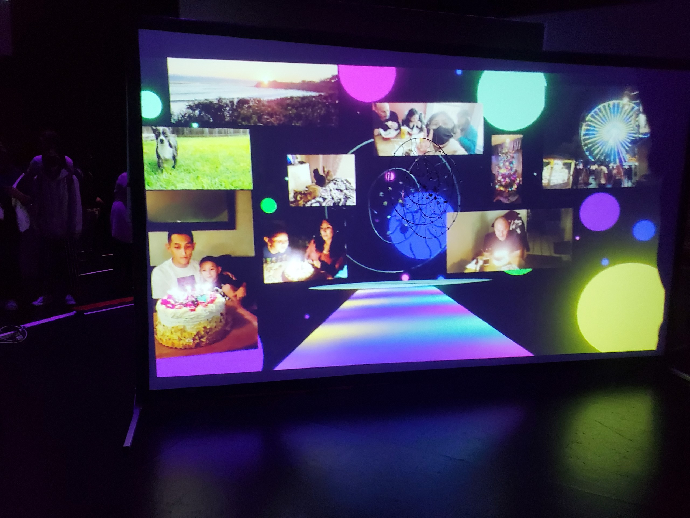

Head In the Clouds, April 2023
I am exploring ADD but from my perspective and how it feels like it affects me
in my daily life. I want to demonstrate how challenging it is to register
information due or mentally stay present due to what feels like mental teleportation.
But in the process, I am able to conceptualize my ideas and designs of my art. I want
to also portray that this flaw of mine has developed into my greatest strength.
This work also features a metal sculpture that represents my consciousness.
The sculpture is inspired by an indigenous dream catcher. My intention is
to portray my consciousness and the spontaneity of powerful thoughts that
stem from the condition in a visual, but also physical form. The video projected
footage conveys my mind that explores consciously generated worlds and memories,
filling my head with colorful thoughts and possibilities. It does not just influence
my mind, but does so in a way so strongly that it triggers emotion, causing my mind
to get lost in its thoughts.